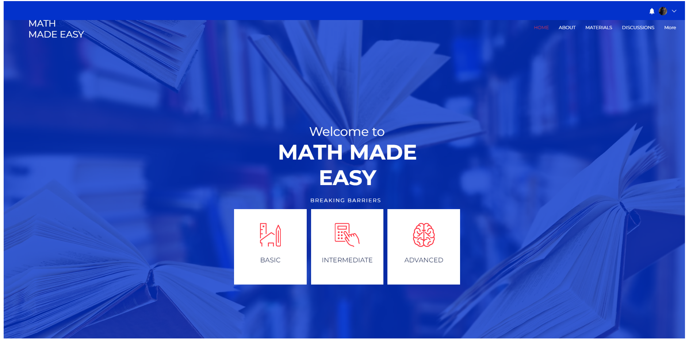
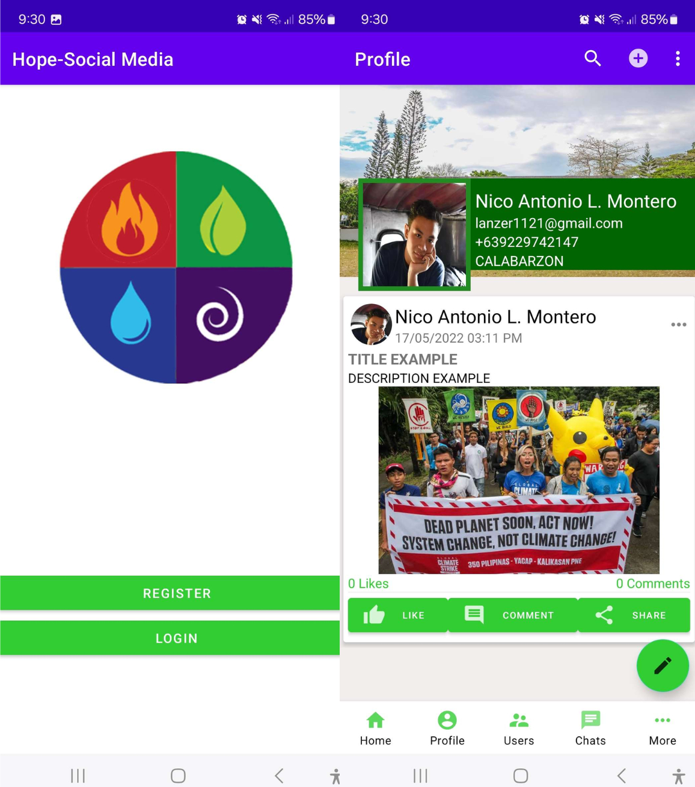
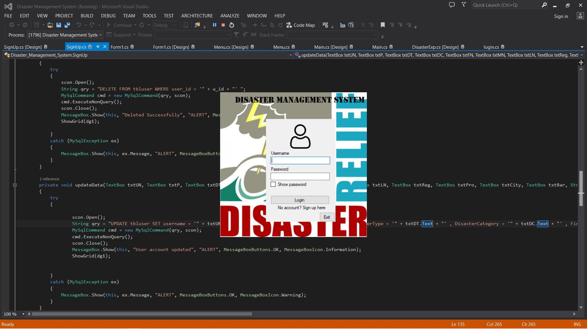
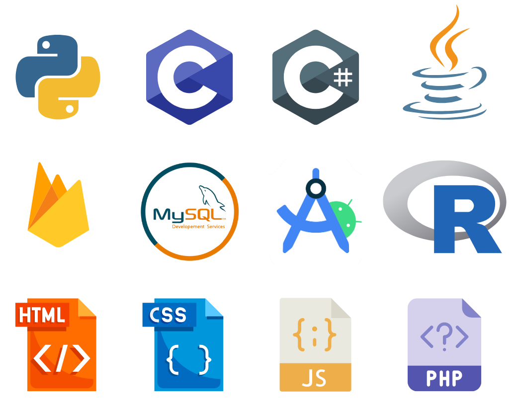

Previous Projects

A website created in fulfillment for Math 10. It contains various learning materials useful for primary to intermediate students
Math Made Easy: Learning Website

A social media application created in android studio backed by a database Montero created in Firebase. HOPE creates a community that allows easier transmission of factual information
that significantly helps in disaster preparedness, awareness, and response.
HOPE: Disaster Preparedness Social Media

A simple Disaster Management System made in C#. It contains a database created in mySQL.
Disaster Management System
SKILLS
Autobiography
Nico Antonio L. Montero is a second year undergraduate student from the University of the Phillipines Los Baños taking BS in Computer Science. A homegrown from Los Baños, Nico always has always been enthusiastic with everything he's passionate about. He constantly seek ways of improving an aspect of his life no matter what it takes. Sometimes introverted, Nico still find ways to collaborate and engage with other people to further improve himself because he knows that for him to better himself he'll need other people's inputs or ideas.